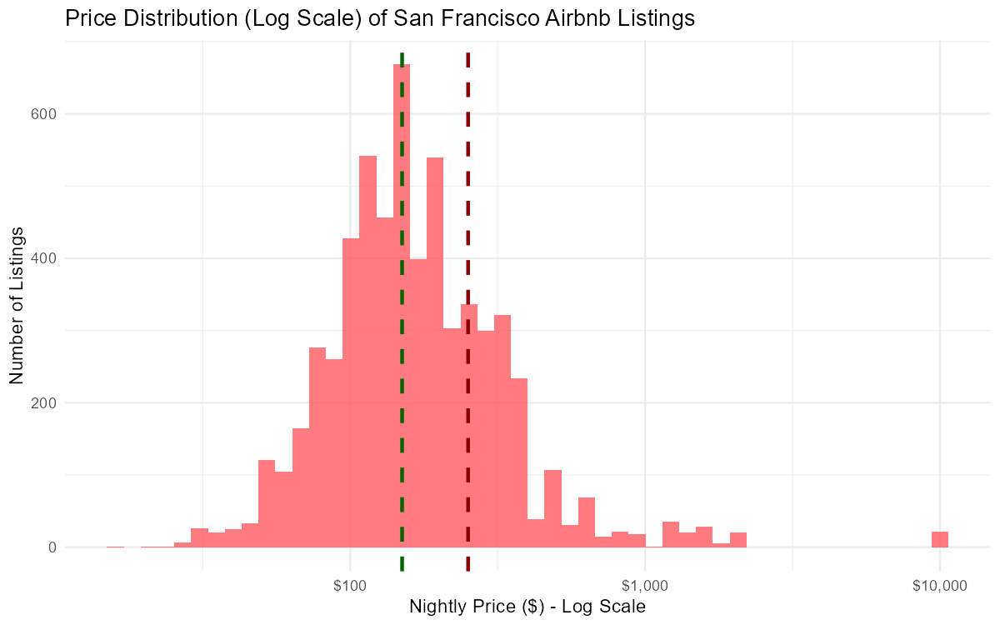
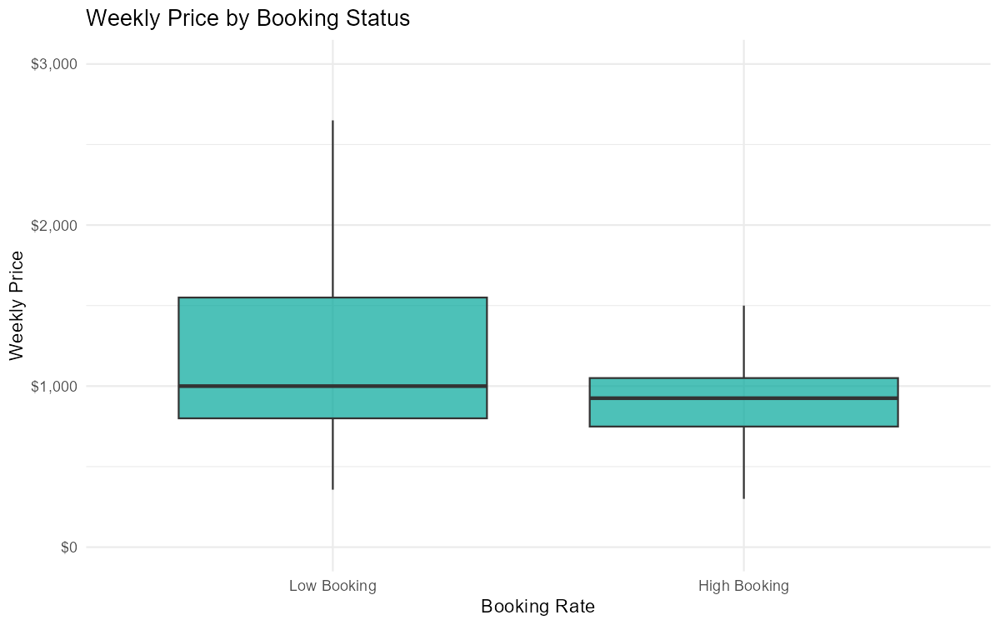

Built supervised ML models to predict which San Francisco Airbnb listings achieve high booking rates, using a dataset of 12,947 listings with 32 features. A Random Forest model achieved 95% ROC-AUC, outperforming Logistic Regression (59%), Bagged Trees (94%), and LightGBM (93%). Beyond model performance, the analysis surfaced actionable business insights,high-booking hosts offer ~14.3% weekly discounts versus 5% industry average, and each additional bedroom increases booking odds by roughly 65%.
Understanding Airbnb Success Drivers
The San Francisco short-term rental market is highly competitive. Hosts with similar properties can see wildly different booking rates depending on pricing strategy, amenity offerings, review quality, and host behavior. Understanding what drives high booking rates matters for:
- ▸Hosts,optimize pricing and listing details to compete more effectively
- ▸Platform teams,identify which listing attributes to highlight or incentivize
- ▸Investors,evaluate short-term rental properties before purchase
The core modeling problem is binary classification: given a listing's features, will it achieve a high booking rate? This framing turns qualitative host intuitions into a data-driven, explainable framework.
Dataset Overview
The dataset comes from Inside Airbnb, containing 12,947 San Francisco listings with 32 features across four categories:
Property Attributes
- Room type (entire home, private room, shared)
- Bedroom & bathroom count
- Neighborhood and location
- Amenities count
Pricing & Availability
- Nightly price (normalized)
- Weekly & monthly discount %
- Minimum/maximum nights
- Availability over 30/60/90/365 days
Host Metrics
- Superhost status (binary)
- Response rate & acceptance rate
- Listings count
- Host tenure (years on platform)
Review Scores
- Overall rating
- Cleanliness, communication, value
- Number of reviews
- Reviews per month
Preprocessing steps: Price normalization (log transform to handle long tail), binary encoding of categorical variables (superhost, room type), median imputation for missing review scores (new listings have no reviews), and feature selection to remove near-zero variance predictors. The target variable was defined as a binary high-booking indicator based on review count as a proxy for occupancy.
Model Comparison
| Model | ROC-AUC | Notes |
|---|---|---|
| Random Forest ✓ Best | 95% | Strong feature interactions, natural feature importance, robust to correlated features |
| Bagged Trees | 94% | Close second; Random Forest's feature sampling gives the edge |
| LightGBM | 93% | Gradient boosting; fast but similar performance to RF at this scale |
| Logistic Regression | 59% | Baseline; fails to capture non-linear interactions (pricing × bedrooms × location) |
Primary metric: ROC-AUC (appropriate for imbalanced binary classification where both precision and recall matter). Model evaluated via stratified 5-fold cross-validation to ensure robust estimates.
What the Model Tells Hosts
14.3%
Avg. weekly discount
of high-booking hosts
vs. 5% industry avg
+65%
Increase in booking odds
per additional bedroom
5–10%
Below market median
optimal pricing zone
Key Feature Importance Findings
Key Charts
Key charts from the project analysis:

Drop airbnb-price-distribution.png into assets/Price distribution (log scale),$150 median vs $257 mean, right-skewed by luxury outliers

Drop airbnb-weekly-discount.png into assets/High-booking listings use 14.3% weekly discounts vs 5% industry average

ROC curves: Random Forest 95% AUC vs Logistic Regression 59% after preprocessing

4× price gap from shared rooms ($50) to entire homes ($200)
Lessons & Takeaways
-
01.
Ensemble methods dominate tabular data. The 36-point ROC-AUC gap between Random Forest (95%) and Logistic Regression (59%) on a dataset with just 32 features illustrates how linear models fail on problems with strong feature interactions,pricing × property size × neighborhood are deeply non-linear.
-
02.
Model outputs need to be translated into action. A 95% AUC is only useful if the findings tell stakeholders what to do differently. The business insight framing (discount strategy, bedroom count, pricing zone) was the analysis that actually mattered to a host audience.
-
03.
Review count as a booking proxy is imperfect. Not all guests leave reviews. The booking rate target is an approximation,the ideal dataset would include actual booking data, not a review-count proxy. Modeling limitations should be disclosed, not buried.